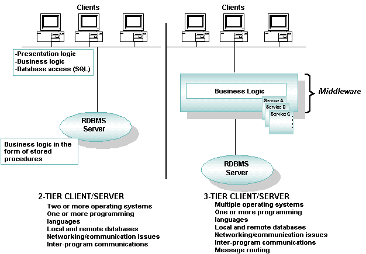
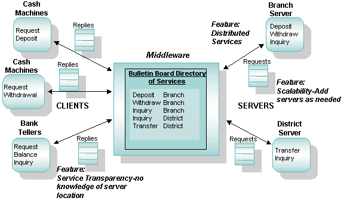

The Oracle Tuxedo system is a middleware product that distributes applications across multiple platforms, databases, and operating systems using message-based communications and, if desired, distributed transaction processing.
Middleware is used with client/server applications to distribute processing among multiple servers, manage distributed transactions, and integrate multiple database platforms. Middleware systems are sometimes known as online transaction processing (OLTP) systems.
The Oracle Tuxedo system is a mature product based on over 20 years of development from a diverse group of technology companies including AT&T, UNIX System Laboratories (USL), Novell, Oracle Systems . It is both a development platform and an execution platform. The Oracle Tuxedo system serves as an extension to the operating system.
The Oracle Tuxedo system provides the following:
An industry standard for the creation and central administration of distributed online transaction applications in a heterogeneous client/server environment.
Ease of use for application developers, who do not need to know all the details about server locations, routing, or platforms used. In a Oracle Tuxedo application, these aspects of a program are transparent.
The fundamental underpinnings for creating, managing, and maintaining reliable, high performance, easily managed distributed systems.
Architectural Features
The Oracle Tuxedo system offers many features to accommodate the architectural aspects of an ATMI application:
Distributed services—allow transparent access to application and/or system services located on different hardware platforms.
Fast, connectionless communications—clients connect to a bulletin board rather than to servers, thus improving system performance.
Server transparency—the directory of services on the bulletin board maps service names to servers; clients do not need to be aware of server identity.
Scalability—application designers can quickly scale their Oracle Tuxedo applications to match varying system load demands because services and servers can be replicated and distributed easily. Designers can set thresholds programmatically to enable the Oracle Tuxedo system to spawn new servers or to shut down servers automatically.
Administrative Features
The Oracle Tuxedo system offers many features to accommodate the administrative aspects of an ATMI application:
Password security and access control security—password security allows application designers to control access by requiring passwords at initialization time (authentication). Further control is available through authorization, a means of restricting access to certain application services to clients that have been given explicit permission and that have authenticated identities.
Application-specific and system events notification—the Oracle Tuxedo system provides details about application and system events, such as servers unexpectedly terminating and networks failing. When an event is posted by clients or servers, the Oracle Tuxedo publish-and-subscribe component looks up all the subscribers to that event and takes appropriate actions, as determined by each subscription.
Management information base (MIB)—an administrative interface that enables administrators to monitor, configure, and tune their applications through their own programs. It is an implementation-independent management database defined as a set of Field Manipulation Language (FML) attributes, which allows administrators to query or change information.
Web-based administration—a graphical user interface, available through the World Wide Web, for the configuration and control of Oracle Tuxedo applications.
Programming Features
The Oracle Tuxedo system offers many features to accommodate the programming aspects of an ATMI application:
Communication techniques—the application programming interface (API) for the Oracle Tuxedo system is a superset of X/Open’s XATMI interface called the Application-to-Transaction Monitor Interface, or ATMI. The Oracle Tuxedo ATMI is a rich set of communication techniques for writing distributed applications.
Distributed Transaction Processing (DTP)—allows work being done throughout a distributed application to be atomically completed, an essential characteristic of any OLTP system.
Typed buffers—provide transparent handling of application data across heterogeneous platforms.
X/Open XA compliance—the Oracle Tuxedo system conforms to the X/Open interface standard for transaction database systems (called resource managers). As a result, application designers can mix and match databases within an application while maintaining data integrity.
X/Open TX compliance—the Oracle Tuxedo system conforms to the X/Open interface standard for transaction demarcation. Oracle Tuxedo also offers its own ATMI interface for transaction demarcation.
Anatomy of the Client/Server Model
In client/server architecture, clients—programs that represent users who need services—and servers—programs that provide services—are separate logical objects that communicate over a network to perform tasks together. A client makes a request for a service and receives a reply to that request. A server receives and processes a request, and sends back the required response.
Characteristics of Client/Server Architecture
The client/server architecture has the following characteristics:
Asymmetrical protocols—a many-to-one relationship between clients and a server. Clients always initiate a dialog by requesting a service. Servers wait passively for requests from clients.
Encapsulation of services—the server is a specialist: when given a message requesting a service, it determines how to get the job done. Servers can be upgraded without affecting clients as long as the published message interface used by both is unchanged.
Integrity—the code and data for a server are centrally maintained, which results in inexpensive maintenance and the protection of shared data integrity. At the same time, clients remain personal and independent.
Location transparency—the server is a process that can reside on the same machine as a client process or on a different machine across a network. Client/server software usually hides the location of a server from clients by redirecting service requests. Clients should not have to be aware of the location of servers.
Namespace transparency—clients should be able to use the same naming conventions (and namespace) to locate any server on the network.
Message-based exchanges—clients and servers are loosely-coupled processes that can exchange service requests and replies using messages.
Modular, extensible design—the modular design of a client/server application enables that application to be fault-tolerant. In a fault-tolerant system, failures may occur without causing a shutdown of the entire application. In a fault-tolerant client/server application, one or more servers may fail without stopping the whole system as long as the services offered on the failed servers are available on servers that are still active. Another advantage of modularity is that a client/server application can respond automatically to increasing or decreasing system loads by adding or shutting down one or more services or servers.
Platform independence—the ideal client/server software is independent of hardware or operating system platforms, allowing the mixing of client and server platforms. Clients and servers can be deployed on different hardware using different operating systems, optimizing the type of work each performs.
Reusable code—service programs can be used on multiple servers.
Scalability—client/server systems can be scaled horizontally or vertically. Horizontal scaling means adding or removing client workstations with only a slight performance impact. Vertical scaling means migrating to a larger and faster server machine or adding server machines.
Separation of client/server functionality—client/server is a relationship between processes running on the same or separate machines. A server process is a provider of services. A client is a consumer of services. Client/server provides a clean separation of functions.
Shared resources—one server can provide services for many clients at the same time, and regulate their access to shared resources.
Differences Between 2-Tier and 3-Tier Client/Server Architectures
Every client/server application contains three functional units:
Presentation logic or user interface (for example, ATM machines)
Business logic (for example, software that enables a customer to request an account balance)
Data (for example, records of customer accounts)
These functional units can be part of the client program or part of the one or more server programs in your application. Which of the many possible variations you choose depends on how you split the application and which middleware you use to communicate between the tiers, as illustrated in the following figure.
Figure 1-1 2-Tier and 3-Tier Client/Server Models

In 2-tier client/server applications, the business logic is buried inside the user interface on the client or within the database on the server in the form of stored procedures. Alternatively, the business logic can be divided between the client and server. File servers and database servers with stored procedures are examples of 2-tier architecture.
In 3-tier client/server applications, the business logic resides in the middle tier, separate from the data and user interface. In this way, processes can be managed and deployed separately from the user interface and the database. Also, 3-tier systems can integrate data from multiple sources.
Client/Server Variations to Suit Your Needs
Client/server architecture can accommodate the needs of each of the following situations:
Small shops and laptops—the client, the middleware software, and most of the business services operate on the same machine. Oracle recommends this approach for one-person businesses such as a dentist’s office, a home office, and a business traveler who frequently works on a laptop computer.
Small businesses and corporate departments—a LAN-based single-server application is required. Users of this type of application include small businesses, such as a medical practice with several doctors, a multi-department corporation, or a bank with several branch offices. In this type of application, multiple clients talk to a local server. Administration is simple: security is implemented at the machine level and failures are detected easily.
Large enterprises—multiple servers that offer diverse functionality are required. Multiple servers can reside on corporate networks, intranets, and the Internet, all of which are highly scalable. Servers can be partitioned by function, resources, or databases, and can be replicated for increased fault tolerance or enhanced performance. This model provides a great amount of power and flexibility. How well you architect your application is critical to this client/server model. You may need to partition work among servers, or design servers to delegate work to other servers.
How the Oracle Tuxedo System Fits into the Client/Server Model
The Oracle Tuxedo system fits into the middle of the client/server model. In a Oracle Tuxedo application, clients log in and request services offered by an application. The Oracle Tuxedo system offers these services through a transparent bulletin board. The bulletin board provides a global directory advertising service.
For example, in the following sample banking application, the bulletin board advertises deposit, withdrawal, and inquiry services. The Oracle Tuxedo system then finds a server at the appropriate branch or district office that can provide the requested services.
Figure 1-2 Clients and Servers in a Sample Banking Application

The sample banking application shows the primary building blocks of a Oracle Tuxedo application:
Clients—programs that collect input from users, send requests through the Oracle Tuxedo system to servers, and deliver server replies to users.
Servers—programs that encapsulate the business logic into a set of services that define the application.
Middleware—comprises all the distributed software needed to support interactions between clients and servers. It is the medium that enables a client to obtain a service from a server. Middleware includes (1) API functions used by the client—to issue requests and receive replies—and the server—to issue replies—and (2) messaging paradigms used to transmit client requests and server responses over a network. Middleware does not include the client user interface, the application logic, or the services provided by the servers.
In the sample Oracle Tuxedo banking application, clients (cash machines and tellers) make requests, and servers (at branch and district offices) provide services and responses. For example, a customer may use a cash machine to find out how much money is available in his personal checking account. The cash machine (a client) calls the server to get the balance. The server receives the request, retrieves the balance, and sends the information to the cash machine.
What Is an Oracle Tuxedo Client?
A client is a program that collects a request from a user and passes that request to a server capable of fulfilling it. It can reside on a PC or workstation as part of the front end of an application. It can also be embedded in software that reads a communication device such as an ATM machine from which data is collected and formatted before being processed by Oracle Tuxedo servers.
To be a client, a program must be able to invoke the Oracle Tuxedo libraries of functions and procedures known collectively as the Application-to-Transaction-Monitor Interface, or ATMI. The ATMI is supported in several language bindings.
A client joins an Oracle Tuxedo application by calling the ATMI client initialization routine. Once it has joined an application, a client can define transaction boundaries and call ATMI functions that enable it to communicate with other programs in the application. The client leaves the application by issuing an ATMI termination function. By joining an application only when necessary and leaving it once the appropriate task is complete, a client frees Oracle Tuxedo system resources for use by other clients and servers.
When building a distributed application, you must determine how information is gathered and presented to your business for processing. You have complete control over where and when to call ATMI functions, depending upon your business logic and rules. Your program can join one Oracle Tuxedo application, perform some tasks and leave, and then join a different Oracle Tuxedo application to perform another task. If you are using a multicontexted application, your client can perform tasks in more than one application without leaving any of them.
What Is an Oracle Tuxedo Server?
A Oracle Tuxedo server is a process that oversees a set of services, dispatching them automatically for clients that request them. A service, in turn, is a function within a server program that performs a particular task needed by a business. A bank, for example, might have one service that accepts deposits and another that reports account balances. A server at this bank might receive requests from clients for both services. The server is responsible for dispatching each request to the appropriate service.
Service functions implement business logic through calls to database interfaces such as SQL and, possibly, calls to the ATMI to access additional services, queues, and other resources. The servers on which these services reside then reply to the clients or send the client requests to a new service.
Application Processing Services Provided by the Oracle Tuxedo System
The Oracle Tuxedo system provides services that enable application developers to implement the following functionality in their applications: